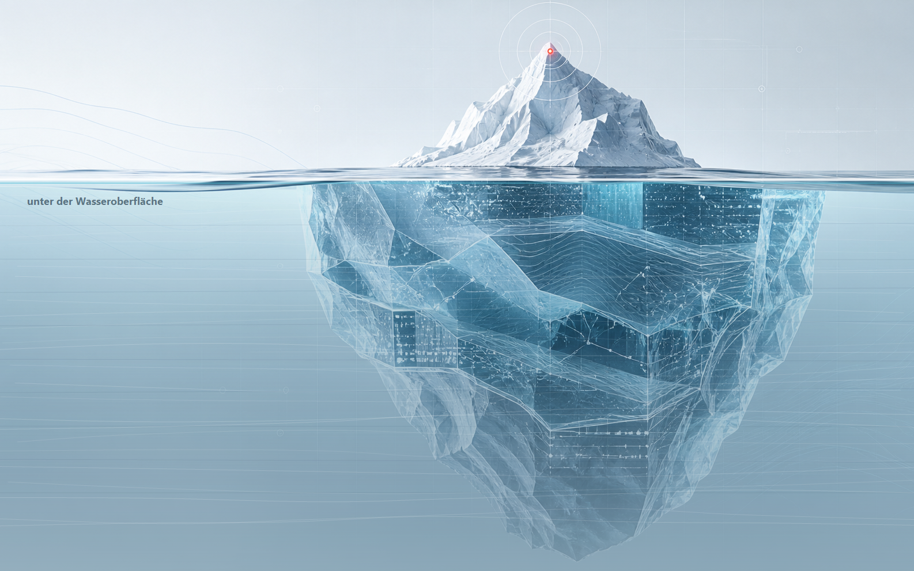

Ausgangsbild
Original
Die Tiefenebene ist fachlich erkennbar, wirkt aber noch wie eine normale Grafikfläche.
Wasseroberfläche und Unterwasserbereich sind optisch noch nicht getrennt.
Statt den unteren Teil auszublenden, wird er durch Wasserlinie, Blauton, reduzierten Kontrast, Tiefenverlauf und dezente Lichtreflexe als verdeckte Ursachenebene lesbar.
